Purpose
This provides instructions for inspecting and, if necessary, upgrading the bleach line in the Panther System.
The new bleach line, UFD Bleach Line Assembly, solvent-bonds the two tubes together and eliminates the reduction barb fitting. This significantly reduces the risk of a leak at the connection of the two lines.
What is Affected
The Panther System bleach line underneath the universal fluids drawer tray will be inspected and replaced, if necessary.
Leaks have been known to occur at the reduction barb fitting located underneath the universal fluids tray.
The entire bleach line will be replaced with the UFD, Bleach Line Assembly.
The new UFD Bleach Line Assembly solvent bonds the two tubes together.
This eliminates the reduction barb fitting and reduces the risk of leaks at the connection of the two lines.
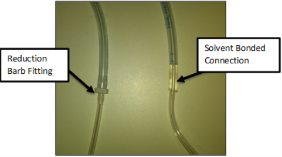
Parts and Materials Required
- Proper PPE
- Set of metric Allen wrenches
- Small set of needle nose pliers
- Tube cutter or snips
- UFD, BLEACH TUBING ASSY
Time Required
- 60 minutes
Applicable Panther Systems
This procedure applies to Panther Systems with S/N 245 and older.
Background
The reduction barb fitting that connects the tube from the bleach bottle to the tube that runs to the deactivation peristaltic pump tends to crack and leak over time.
A visual inspection of the fitting can be done by tracing the bleach line to the right hand side of the universal fluids drawer.
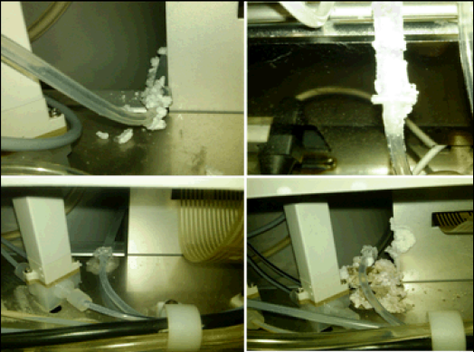
Procedure
- Put on proper PPE.
 Open the Universal Fluids Drawer and inspect the bleach line to determine which configuration exists on the system.
Open the Universal Fluids Drawer and inspect the bleach line to determine which configuration exists on the system.
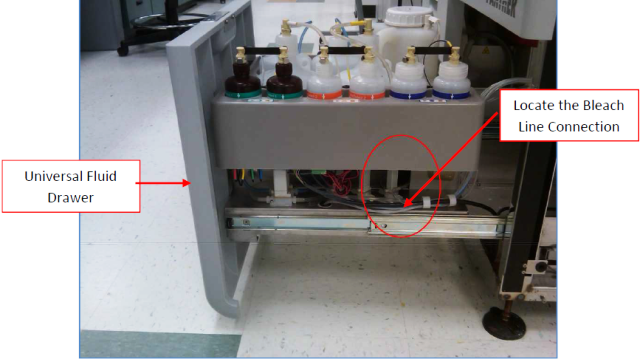
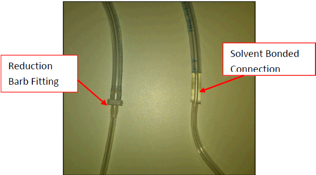
If the connection has the reduction barb fitting, then proceed to the next step. If the solvent bonded tubes are already installed, proceed to step 23.
- Open the Universal Fluids Drawer and disconnect all fluid quick connects from the universal fluids bottles.
- Start Panther Software and perform two full system primes.
- After the second prime is completed, power down the Panther System.
- Inspect the universal fluids solenoid area for any signs of leaks. Clean, correct, and tighten any leaking fittings, as necessary.
- Mark A and B on the respective universal fluids bottle kits. Remove the bottles and set them aside on an absorbent pad.
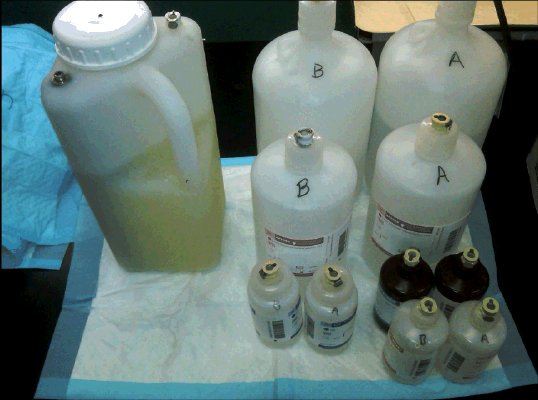
- Push all universal fluid tubes through the grommets in the universal fluid trays to allow you to remove the trays without stretching the tubes.
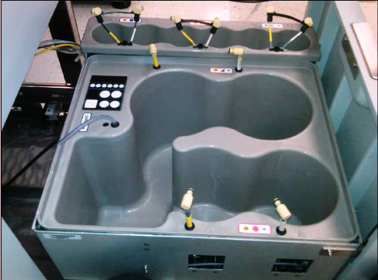
- Remove the M4 screw that secures the AD1, AD2, and Oil tray to the side of the Universal Fluids tray.

Note—Watch for washers as you perform this step. 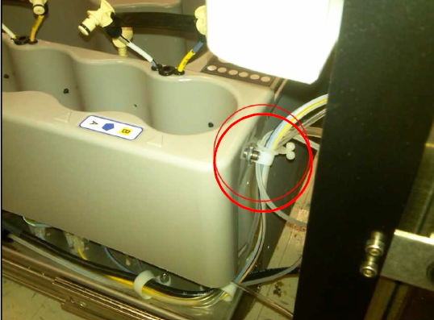
- Remove the Universal Fluids Drawer front cover and remove the second mounting screw behind the drawer cover.
- Move the AD1, AD2, and Oil tray aside. Be careful not to kink or damage any fluid lines.
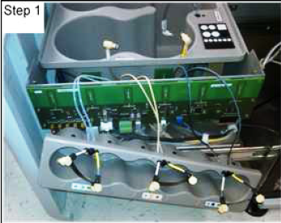
- Disconnect the Universal Fluids LED indicator display board from the Universal Fluids PCB prior to lifting the Wash and Deactivation fluid tray out of the drawer.
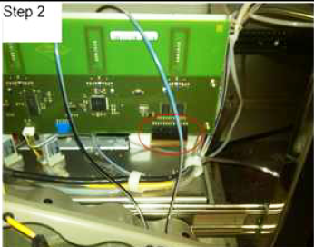
- Carefully lift out and position the Wash and Deactivation fluid tray to the left hand side of the Universal Fluids drawer. Be careful not to damage or kink any fluid lines or RFID antennae.
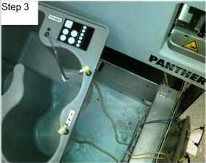
- Clean any dried bleach that has accumulated under the fluids tray. Inspect the inside of the system near the vacuum pump module and the liquid cooling unit for evidence of leaking bleach and clean.
Note—Do not use ethanol for cleaning. 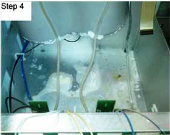
- Remove the existing bleach line (Not the buffer line). by cutting the bleach line just below the luer fitting at the peristaltic pump and by cutting the line just below the quick connect fitting at the Universal Fluid tray.
Note—Make note of the tube routing while removing the bleach line. 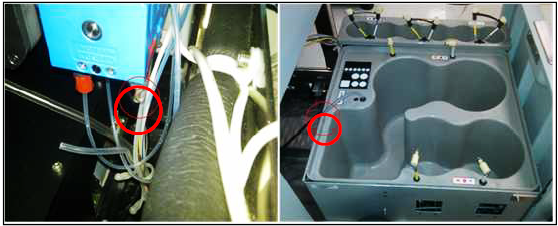
- Remove the luer fitting and tubing clip from the new bleach tubing set to thread the tubing through the grommet on the chassis.
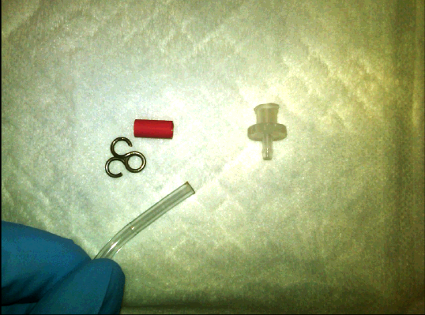
- Install the new bleach tube by back tracking Step 15.
Note—Start by connecting the tube on the peristaltic pump first, then routing the line from there. - Reinstall the tube clip and luer fitting to the bleach line, in the order listed. Push the tubing clip over the barb and reconnect the luer fitting to the peristaltic pump.
- Route the Universal Fluid LED display connector through the hole, and carefully lower the Wash Buffer and Deactivation tray back into place.

Warning—Make sure the bleach line is not routed under the tray. - Reinstall the front drawer cover and make sure to align it with the drawer close sensor and verify that it closes correctly with interfering with the Mid Bay drawer cover.
- Reconnect the Universal Fluids LED display connector to the Universal Fluids PCB.
Note—Be careful not to pinch or kink the tubes during this process. The tubes should be routed around the side and in front of the tray. 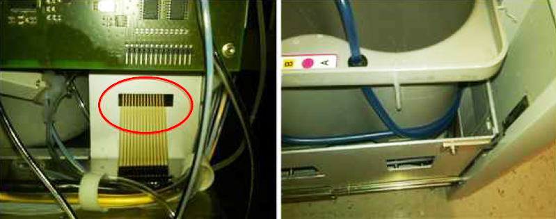
- Reinstall the AD1, AD2, and Oil tray by reversing the process in Step 11. Tighten the screw at the back of the tray to hold it in place.
- Perform a Total Service Call on the Universal Fluids Drawer and fittings:
- Wipe down the Fluids Drawer trays with bleach, DI water, and ethanol.
- Tighten all cap fittings on the Universal Fluids caps and clean any dried fluids from the caps.
- Clean and grease all fluids quick connects.
- Reinstall all Universal Fluids back into their respective kit positions.
- Replace the deactivation peristaltic pump tubing, if needed.
Verification
- Power on the Panther System.
- Start the Panther software.
- Run a full system prime.
- Inspect all fluids fittings for signs of leakage, especially at the peristaltic pump fittings.
A second prime may be required because the lines were drained in Step 3 of the procedure.
Verification is complete when the prime passes.
 button at the top of the page to send feedback, comments, or change requests.
button at the top of the page to send feedback, comments, or change requests.{kind=link}